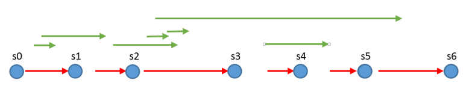

An immutable data structure can not be modified once it has been created. DateTime and String are types of which
all instances are immutable. Methods like ToUpper() and AddDays() never mutate the object itself, instead they
return new instances representing the new values.
One benefit of immutable data structures is that they are safe to read from any number of concurrent threads without the need
for synchronization. By applying this principle to the entire OrigoDB in-memory model, some performance benefits can be achieved.
A command takes the current state of the model as input and returns a new model which becomes the new current state.

In the figure, time flows from left to right. Commands are red, qeuries are green. Commands can only execute one at a time but they
do not need an exclusive lock on the model. Queries can be started at any time and will take the most recent state as input
and keep a reference to it for the duration of the query. So queries are not blocked by, and won’t block commands.
It’s also safe to return direct references to any objects within the model. By default, command and query results are cloned
using binary serialization, which gaurantees isolation but costs time and CPU, often much more than executing the domain logic itself.
Here’s an example immutable collection type. Notice how the AddTask() method returns a new instance of TodoModel and that the underlying array
is never modified. Notice also how the Tasks() method creates a new array. Returning a direct reference to _tasks would allow the
content to be modified. Finally, note that both _tasks and the returned array reference the same underlying string objects. But since
strings are immutable, this is completely safe.
[Serializable]
public class TodoModel : Model
{
private String[] _tasks = {};
public TodoModel AddTask(string task)
{
var newState = new TodoModel();
var temp = _tasks.ToList();
temp.Add(task);
newState._tasks = temp.ToArray();
return newState;
}
public IEnumerable<String> Tasks()
{
return _tasks.ToArray();
}
}Here’s another example immutable type, this time an entity class. Note again that there is no way to change
the state of a Task once it has been instantiated.
public class Task
{
public readonly string Title;
public readonly DateTime? Completed;
public Task(string title, DateTime? completed = null)
{
Title = title;
Completed = completed;
}
public Task Complete(DateTime completed)
{
return new Task(Title, completed);
}
}Microsoft has provided a set of immutable collection classes available on Nuget including implementations of Dictionary, List, Queue,
Stack and Set. The library requires NET 4.5.
The MS collections are not serializable. It is necessary to write custom serialization code for the model by
implementing ISerializable.
Commands return a new model and must not change the current model. Derive commands from ImmutableCommand<TModel> or ImmutableCommand<TModel, TResult>
and override either public abstract void Execute(TModel model, out TModel result); or public abstract TResult Execute(TModel model, out TModel nextModel).
[Serializable]
public class AddTaskCommand : ImmutableCommand<TodoModel>
{
public readonly string Task;
public AddTaskCommand(string task)
{
Task = task;
}
public override void Execute(TodoModel model, out TodoModel next)
{
next = model.AddTask(task);
}
}The engine needs to be configured to use the ImmutabilityKernel and optionally with lock free concurrency.
var config = EngineConfiguration.Create();
config.Kernel = Kernels.Immutability;
config.Synchronization = SynchronizationMode.None;
// or to get both settings
var config = EngineConfiguration.Create().WithImmutability();
//pass config when creating engine
var engine = Engine.For<TodoModel>(config);
//execute commands as usual
engine.Execute(new AddTaskCommand("500 backhand volley drop shots"));Immutability does not yet work with the proxy feature.
See a complete example in the Examples.Immutability repository.